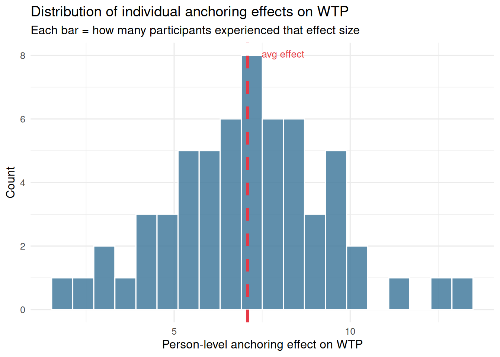
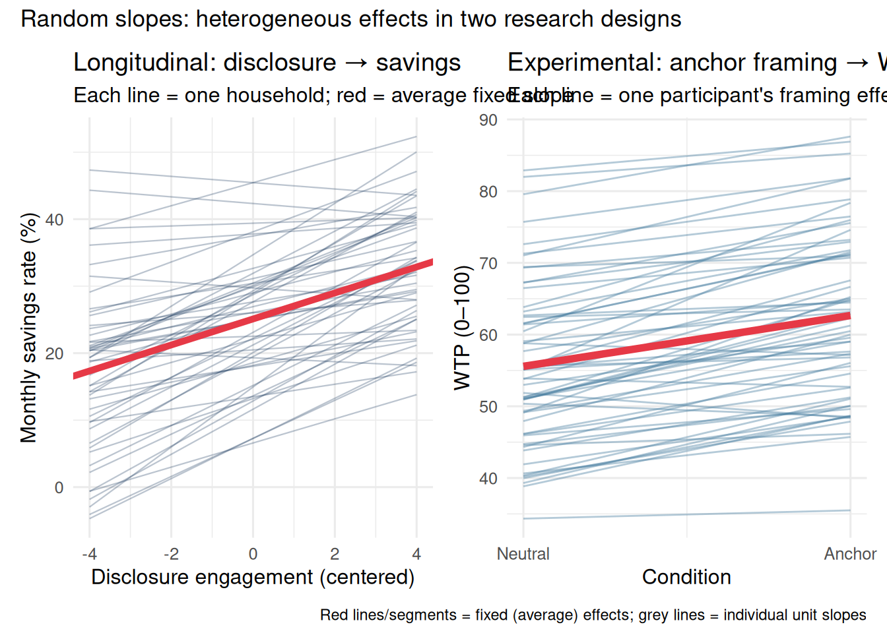
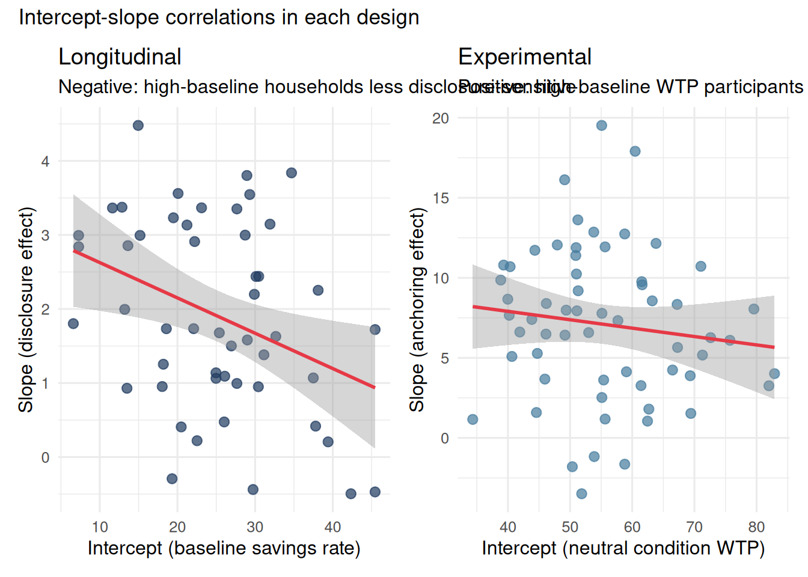
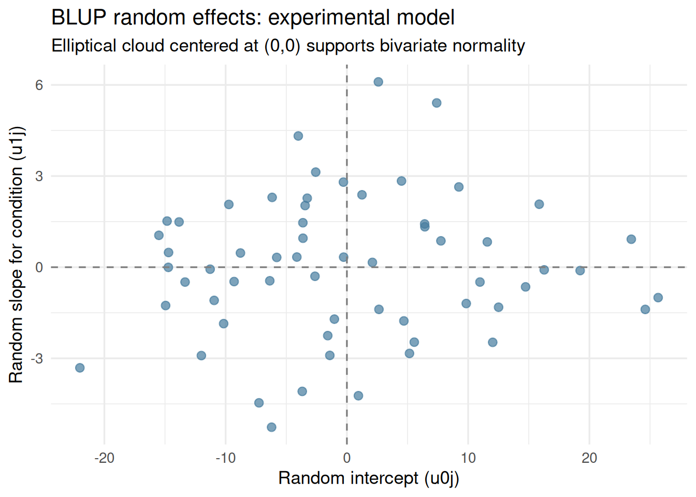

NoteWhen the Average Effect Hides the Most Interesting Story
Question: If the random-intercept model only lets units start at different levels, what happens when the effect of a predictor also varies across units — when disclosure motivates some households strongly but leaves others cold?
What goes wrong: A model with random intercepts but a fixed slope estimates one disclosure effect for everyone. That single number is the average, but the average may describe no individual household accurately. Omitting the random slope also pushes treatment heterogeneity into the residual, deflating standard errors for the average effect.
The fix: Random slopes add a unit-specific deviation to the slope — estimating the distribution of effects across units, not just the mean. The result is correct standard errors, richer interpretation, and a direct measure of treatment effect heterogeneity.
When Effects Vary Across Units
The random-intercept model assumes that the slope — the relationship between a predictor and the outcome — is identical across all units. Only the baseline level differs from unit to unit. This is often an unrealistic assumption.
Consider two research settings:
Longitudinal panel data. A financial coaching program tracks households across monthly waves. The average effect of disclosure engagement on savings may be positive — households that read more of the disclosure tend to save more that month. But some households are highly responsive: reading one extra page pushes them to act on the advice. Others are dismissive: they read the same pages but do not change their behaviour. The slope of disclosure → savings varies across households.
Within-subjects experiments. A price-framing study asks participants to complete WTP tasks under either a “high anchor” or “neutral” framing. On average, the anchor condition increases WTP. But individual responses to the manipulation vary considerably — some participants are strongly anchored, others barely register a difference. The treatment effect itself is heterogeneous across participants.
The random-slope model addresses this directly. Rather than fixing one slope for everyone, we treat each unit’s slope as a draw from a distribution, allowing us to estimate:
The average effect across units (the fixed slope, \(\gamma_{10}\))
The variability of that effect across units (the random slope variance, \(\sigma^2_{u_1}\))
The correlation between where units start and how strongly they respond (\(\rho_{u_0, u_1}\))
The random effects are assumed to follow a bivariate normal distribution: \[\begin{pmatrix} u_{0j} \\ u_{1j} \end{pmatrix} \sim \mathcal{N}\left(\begin{pmatrix} 0 \\ 0 \end{pmatrix}, \begin{pmatrix} \sigma^2_{u_0} & \sigma_{u_0 u_1} \\ \sigma_{u_0 u_1} & \sigma^2_{u_1} \end{pmatrix}\right)\]
What does \(u_{1j}\) mean in each context?
Longitudinal:\(u_{1j}\) is household \(j\)’s deviation from the average disclosure sensitivity. A large positive \(u_{1j}\) means this household responds unusually strongly to disclosure — each page read produces a steep increase in savings. A near-zero \(u_{1j}\) means disclosure has its typical (average) effect on this household.
Experimental:\(u_{1j}\) is participant \(j\)’s deviation from the average anchoring effect. A large \(u_{1j}\) signals that this individual is strongly anchored — the framing shifts their WTP far more than average. A near-zero \(u_{1j}\) means the manipulation barely affected them.
Longitudinal Example — Heterogeneous Response to Financial Disclosure
Design: 50 households measured across 8 monthly waves. The predictor is monthly disclosure engagement (pages read, centered at its grand mean of 6). The outcome is monthly savings rate (%). Each household has their own disclosure sensitivity — modeled as a random slope.
The simulation imposes a correlation of −0.3 between intercepts and slopes: households that start with high baseline savings are somewhat less sensitive to disclosure (perhaps because they are already well-informed and the marginal effect of additional reading is smaller).
Variance components: disclosure → savings random slope model
effect
group
term
estimate
ran_pars
household
sd__(Intercept)
9.307
ran_pars
household
sd__disclosure_c
0.891
ran_pars
household
cor__(Intercept).disclosure_c
-0.481
ran_pars
Residual
sd__Observation
4.856
The variance component for disclosure_c at the household level (\(\hat\sigma^2_{u_1}\)) captures how much individual sensitivity to disclosure varies. The correlation term estimates the intercept-slope association.
The grey lines reveal substantial variation in disclosure sensitivity. Most households show the expected positive slope, but the steepness varies considerably. A few households show near-flat slopes — for them, disclosure engagement may reflect motivation that exists regardless of the specific advice read.
Intercept-slope correlation: A negative correlation means households with higher baseline savings tend to show a weaker positive disclosure effect. High-saving households may already be well-informed, so additional reading yields diminishing returns. Conversely, low-saving households may have the most to gain from each additional page.
Experimental Example — Anchoring and WTP
Design: 60 participants complete 12 WTP tasks each (6 in the high-anchor condition, 6 in the neutral condition, counterbalanced). The predictor is framing condition (anchor = 1, neutral = 0). The outcome is WTP (0–100 scale). Each participant is allowed their own anchoring sensitivity.
The simulation imposes a positive correlation of 0.2 between intercepts and slopes: participants with higher baseline WTP show a slightly stronger anchoring effect (the anchor has more “room” to pull their estimates upward).
Variance components: anchor framing condition random slope model
effect
group
term
estimate
ran_pars
participant
sd__(Intercept)
11.096
ran_pars
participant
sd__condition
3.324
ran_pars
participant
cor__(Intercept).condition
-0.025
ran_pars
Residual
sd__Observation
5.923
Code
# Extract per-participant anchoring effects (random slope BLUPs + fixed effect)re_exp <-ranef(model_rs_exp)$participantnames(re_exp) <-c("u0", "u1")avg_effect <-fixef(model_rs_exp)["condition"]re_exp <- re_exp |>mutate(person_anchor_effect = avg_effect + u1)p_hist <-ggplot(re_exp, aes(x = person_anchor_effect)) +geom_histogram(bins =20, fill ="#457b9d", color ="white", alpha =0.85) +geom_vline(xintercept = avg_effect, color ="#e63946",linewidth =1.5, linetype ="dashed") +annotate("text", x = avg_effect +0.4, y =Inf,label ="avg effect", color ="#e63946",vjust =2, hjust =0, size =3.5) +labs(title ="Distribution of individual anchoring effects on WTP",subtitle ="Each bar = how many participants experienced that effect size",x ="Person-level anchoring effect on WTP",y ="Count" ) +theme_minimal(base_size =12)p_hist

Some participants show almost no anchoring effect; others show a WTP increase exceeding +20 points. The random slope captures this theoretically important heterogeneity — heterogeneity that is invisible in a model that forces the same effect on everyone.
WarningKey Point: Random Slopes and Type I Error in Experiments
Barr, Levy, Scheepers, & Tily (2013) demonstrated that omitting random slopes for within-subjects conditions inflates Type I error rates substantially. The mechanism: if you do not model variation in the treatment effect across participants, that variation is absorbed into the residual — deflating standard errors and making the average effect appear more precise than it is.
The recommendation: In within-subjects designs, include random slopes for all within-subjects factors by default (the “maximal” random effects structure). The random slope is not merely a nuisance parameter — it is the treatment effect heterogeneity, which is often scientifically interesting in its own right.
Comparing the Two Examples Side by Side
Code
p_long_slopes + p_exp_slopes +plot_annotation(title ="Random slopes: heterogeneous effects in two research designs",caption ="Red lines/segments = fixed (average) effects; grey lines = individual unit slopes" )

The Intercept-Slope Correlation
The random-slope model estimates not just variance in intercepts and variance in slopes, but also their covariance — equivalently, the correlation \(\rho_{u_0, u_1}\).
This correlation is substantively meaningful in both contexts.
Longitudinal interpretation. A negative intercept-slope correlation means: households with higher baseline savings tend to show a weaker positive disclosure effect. High-saving households may already implement advice regardless of how much they read — diminishing returns to disclosure. Conversely, low-saving households may have the most to gain from each additional page.
Experimental interpretation. A positive intercept-slope correlation means: participants with higher baseline WTP show a stronger anchoring effect. One interpretation: the anchor provides a reference that is proportionally more relevant when a participant already has a high willingness to pay — more room to be pulled upward.
Code
p_corr_long <-ggplot(household_lines, aes(x = intercept, y = slope)) +geom_point(size =2.5, color ="#1e3a5f", alpha =0.7) +geom_smooth(method ="lm", color ="#e63946", se =TRUE, linewidth =1) +labs(title ="Longitudinal",subtitle ="Negative: high-baseline households less disclosure-sensitive",x ="Intercept (baseline savings rate)",y ="Slope (disclosure effect)" ) +theme_minimal(base_size =12)p_corr_exp <-ggplot(participant_lines, aes(x = intercept, y = slope)) +geom_point(size =2.5, color ="#457b9d", alpha =0.7) +geom_smooth(method ="lm", color ="#e63946", se =TRUE, linewidth =1) +labs(title ="Experimental",subtitle ="Positive: high-baseline WTP participants more anchor-sensitive",x ="Intercept (neutral condition WTP)",y ="Slope (anchoring effect)" ) +theme_minimal(base_size =12)p_corr_long + p_corr_exp +plot_annotation(title ="Intercept-slope correlations in each design")

The Zero-Correlation Parameterization
By default, (predictor | group) estimates random slope variance and the intercept-slope correlation. When the correlation is near zero, theoretically uninteresting, or causing convergence problems, the zero-correlation parameterization separates the two:
# Full: estimates intercept variance, slope variance, AND their correlationlmer(savings ~ disclosure_c + (disclosure_c | household), data = df_diary)# Zero-correlation: estimates both variances, forces correlation to zerolmer(savings ~ disclosure_c + (1| household) + (0+ disclosure_c | household), data = df_diary)
The sequence tests: (1) does the random slope variance matter at all? (RI vs. ZCP) and (2) does the intercept-slope correlation additionally matter? (ZCP vs. full). This staged approach identifies the minimum sufficient random effects structure.
When to prefer zero-correlation parameterization:
Situation
Recommendation
Small sample (< 20 units)
ZCP; estimating \(\rho\) is unreliable
Model fails to converge
Try ZCP as a first simplification step
Correlation is theoretically uninteresting
ZCP avoids unnecessary parameters
Testing whether the correlation matters
Compare ZCP vs. full with LRT
Assumptions of Random-Slope Models
WarningAssumption 1: Multivariate Normality of Random Effects
What it means: The random intercepts and slopes are jointly drawn from a bivariate normal distribution. Severe departures — banana-shaped clouds, truncation, discrete clusters — suggest the normality assumption is violated, and estimates may be biased.
JDM examples: If households fall into two discrete types (highly financially engaged vs. completely disengaged), the random slopes will form two clusters rather than an elliptical cloud. Similarly, if participants in an anchoring study come from two distinct pools (experienced negotiators vs. novices), the slope distribution may be bimodal.
How to check: Plot the BLUP estimates from ranef() as a scatterplot. A well-specified model produces an elliptical cloud centered at the origin.
Code
re_df_exp <-as.data.frame(ranef(model_rs_exp)$participant)names(re_df_exp) <-c("u0_intercept", "u1_slope")ggplot(re_df_exp, aes(x = u0_intercept, y = u1_slope)) +geom_point(size =2.5, color ="#457b9d", alpha =0.7) +geom_hline(yintercept =0, linetype ="dashed", color ="gray50") +geom_vline(xintercept =0, linetype ="dashed", color ="gray50") +labs(title ="BLUP random effects: experimental model",subtitle ="Elliptical cloud centered at (0,0) supports bivariate normality",x ="Random intercept (u0j)",y ="Random slope for condition (u1j)" ) +theme_minimal(base_size =13)

WarningAssumption 2: Correct Random Effects Structure Is Specified
What it means: The model must include random slopes for every predictor whose effect varies meaningfully across units. Omitting a necessary random slope pushes that variability into the residual, deflating standard errors for the fixed effect and producing anti-conservatively small p-values.
How to check: Use likelihood ratio tests (LRT) comparing models with and without the random slope. Models must be fitted with REML = FALSE for valid LRT comparisons.
=== Experimental: does anchoring effect vary across participants? ===
Code
anova(model_ri_exp_ml, model_rs_exp_ml)
npar
AIC
BIC
logLik
-2*log(L)
Chisq
Df
Pr(>Chisq)
model_ri_exp_ml
4
4891.152
4909.469
-2441.576
4883.152
NA
NA
NA
model_rs_exp_ml
6
4881.018
4908.494
-2434.509
4869.018
14.13343
2
0.000853
A significant LRT (\(p < .05\)) indicates the random slope accounts for meaningful variance and should be retained. Use REML = TRUE for final parameter estimation once the model structure is settled.
WarningAssumption 3: Convergence
What it means: Complex random-slope models — especially with multiple predictors or crossed random effects — frequently fail to converge. A convergence warning from lme4 signals the optimization algorithm did not find a stable solution. Estimates from non-converged models should not be trusted or reported.
How to check: Use check_convergence() from the performance package.
Code
check_convergence(model_rs_diary)
[1] TRUE
attr(,"gradient")
[1] 2.299537e-05
Code
check_convergence(model_rs_exp)
[1] TRUE
attr(,"gradient")
[1] 1.676889e-07
What to do if convergence fails:
Center and scale continuous predictors
Remove the intercept-slope correlation (see zero-correlation parameterization above)
Try alternative optimizers: control = lmerControl(optimizer = "bobyqa")
Simplify the random effects structure if the LRT supports it (non-significant random slope variance)
Consider Bayesian estimation via brms, which handles complex random-effects structures more robustly
Model Comparison — Do You Need Random Slopes?
Add random slopes when:
Theory predicts heterogeneous effects. In financial coaching research, household-level differences in disclosure sensitivity are plausible and theoretically interesting — some households act on advice, others do not. In anchoring studies, individual differences in susceptibility to reference points are well-documented.
The LRT supports them. The model with random slopes fits significantly better than the model without (at REML = FALSE).
The design mandates them. In within-subjects experimental designs, random slopes for within-subjects conditions are structurally required to account for heterogeneous treatment effects. Omitting them is not conservative — it inflates Type I error (Barr et al., 2013).
Sample size is adequate. Estimating a random slope requires sufficient variation in the predictor within each unit. Longitudinally: each household must have multiple waves with varying disclosure engagement. Experimentally: each participant must complete trials in multiple conditions.
Model fit: random intercept vs. random intercept + slope
setting
model
AIC
BIC
logLik
Longitudinal
RI only
2618.0
2634.0
-1305.0
Longitudinal
RI + Slope
2605.1
2629.1
-1296.6
Experimental
RI only
4891.2
4909.5
-2441.6
Experimental
RI + Slope
4881.0
4908.5
-2434.5
TipReviewer Challenge: Three Questions About Your Random Slopes
Challenge 1 — “Is the slope variance scientifically meaningful or just noise?” A significant LRT for the random slope variance tells you that slopes vary across units more than expected by chance. But variance could reflect true heterogeneity in disclosure sensitivity or measurement noise in within-household disclosure estimates. Reviewers will ask: is the \(\hat\sigma_{u_1}\) estimate large enough to be practically meaningful? If the SD of individual slopes is only 0.1 when the average effect is 2.0, the heterogeneity is probably not theoretically important, even if statistically significant. Report \(\hat\sigma_{u_1}\) alongside the fixed slope.
Challenge 2 — “What does the intercept-slope correlation mean for your theory?” A reviewer will ask whether the negative correlation between household baseline savings and disclosure sensitivity is consistent with a theoretical mechanism (diminishing returns) or whether it is an artefact of regression to the mean. Present the correlation with a scatterplot of BLUPs and a substantive interpretation — do not just report the number from the variance-covariance matrix.
Challenge 3 — “Did you test the maximal structure?” If you included a random slope for disclosure engagement but not for other within-household predictors (e.g., season, promotion activity), a reviewer may ask why. The Barr et al. (2013) recommendation is to include random slopes for all within-unit factors. Be ready to justify each slope inclusion or exclusion with a combination of theoretical reasoning and LRT results.
Recommended Reading
Topic
Citation
Maximal random effects in experiments
Barr, D. J., Levy, R., Scheepers, C., & Tily, H. J. (2013). Random effects structure for confirmatory hypothesis testing: Keep it maximal. Journal of Memory and Language, 68(3), 255–278.
Random slopes and cross-level interactions
Heisig, J. P., & Schaeffer, M. (2019). Why you should always include a random slope for the lower-level variable involved in a cross-level interaction. European Sociological Review, 35(2), 258–279.
Random slopes in experimental psychology
Judd, C. M., Westfall, J., & Kenny, D. A. (2012). Treating stimuli as a random factor in social psychology: A new and compelling case for mixed models. Journal of Personality and Social Psychology, 103(1), 54–69.
Practical guide to lme4
Bates, D., Mächler, M., Bolker, B., & Walker, S. (2015). Fitting linear mixed-effects models using lme4. Journal of Statistical Software, 67(1), 1–48.